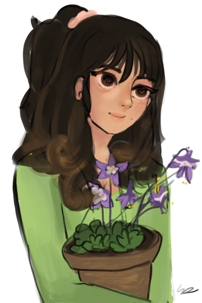

Hello! I'm Liz Shan.
I draw & I code. A hopeful soon-to-be developer.
Feel free to explore my page by clicking the links below,
or keep scrolling to read more about me!


ⓒ All art on this website is drawn by me unless specificed otherwise. Please do not reuse or repost without permission.